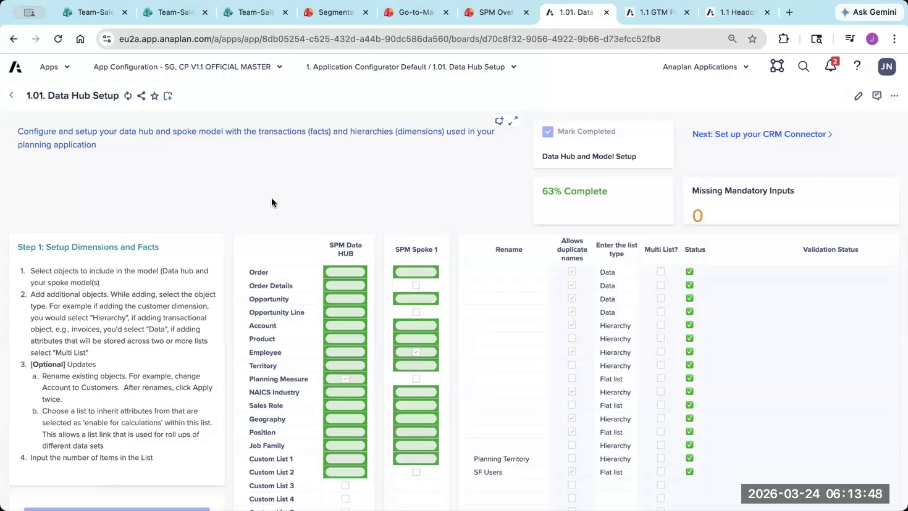
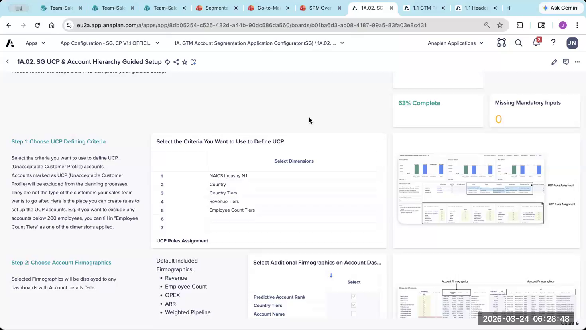
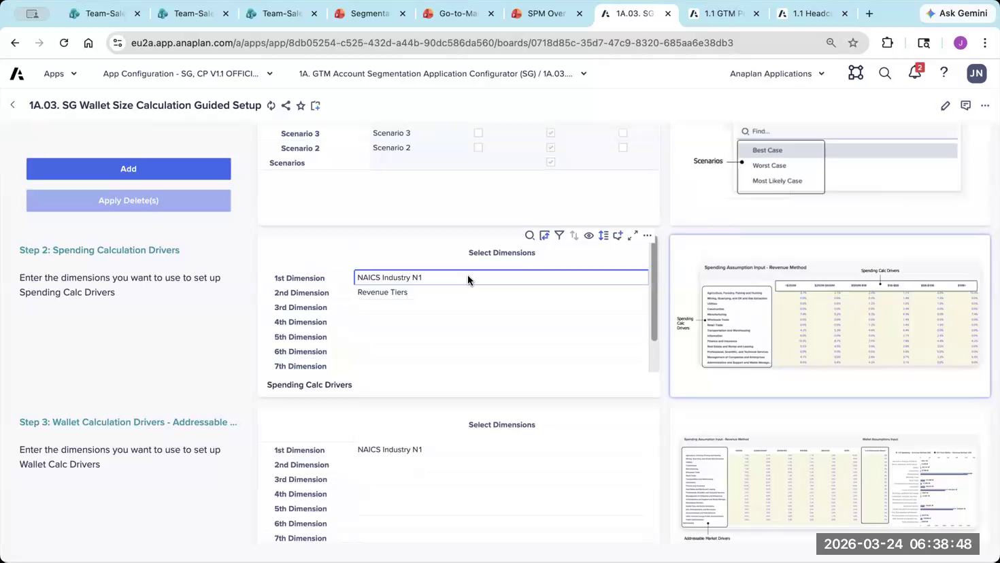
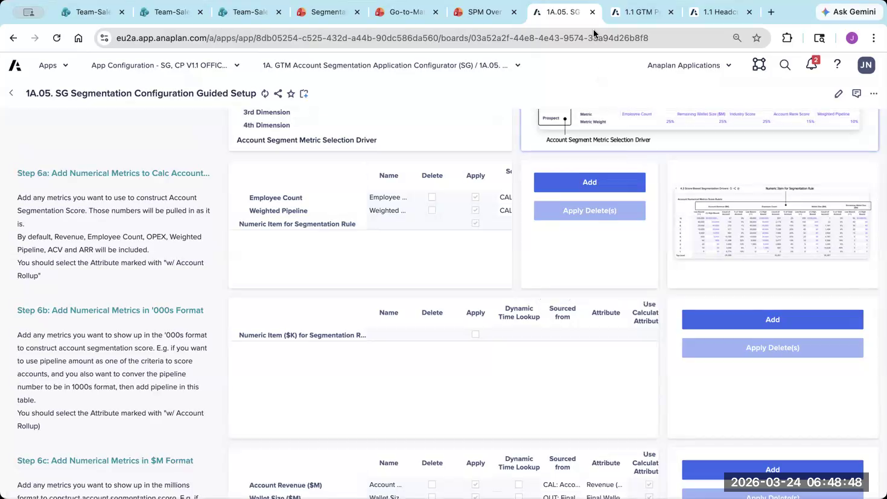
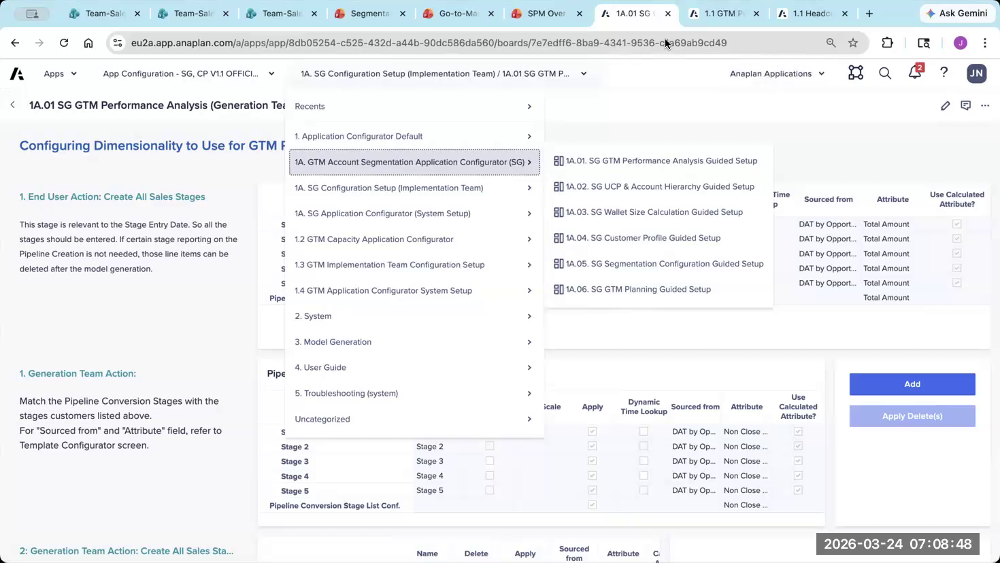
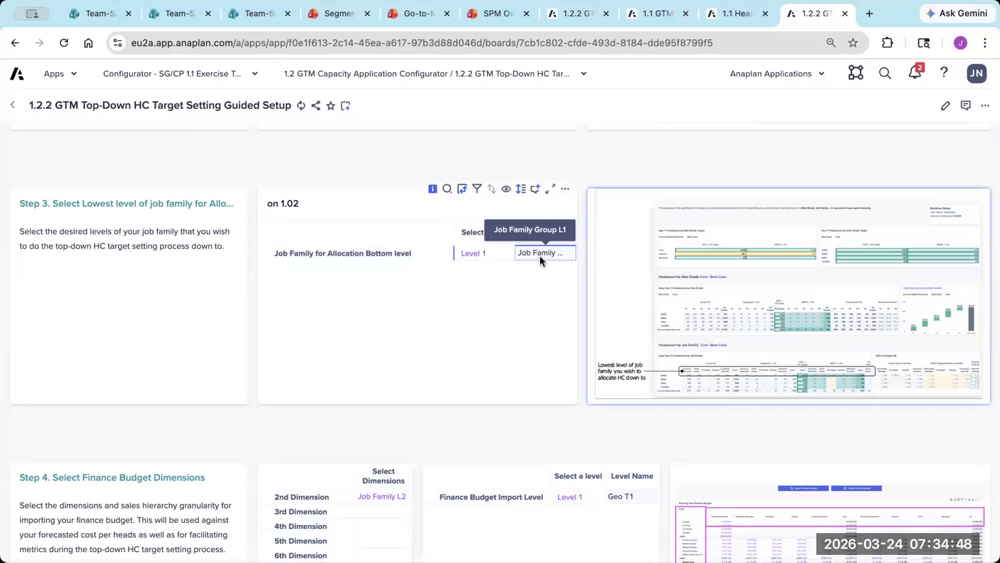
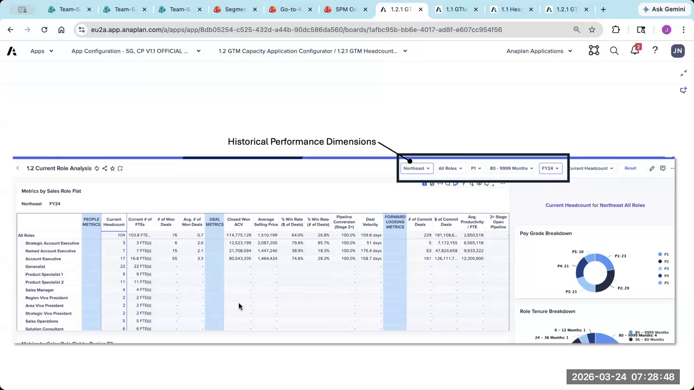

Lab: Segmentation & Capacity Configurator Exercise
Using the CloudWorks case study — Segmentation and Capacity sections
Exercise Overview
Using the same CloudWorks case study from the T&Q module, configure the Segmentation and Capacity sections of the configurator. The case study has a dedicated section for each — scroll down past the T&Q section to find them.
Access
- Use the same configurator app you used in the T&Q exercise
- Find the Segmentation section (lower in the same nav)
- Then the Capacity section below that
- Reference dataset files are the same — same accounts, employees, and opportunities from the T&Q module
Part 1: Segmentation Configuration
Navigate to the Segmentation section of the configurator (section 1A in the left nav). Complete these mini-labs in order.
- 1 Navigate to Page 1A.01: SG GTM Performance Analysis Guided Setup.
- 2 Review the CloudWorks account data: key firmographic fields are Industry, Employee Count, and Revenue Band.
- 3 Enable list-formatted attributes for: Industry, Employee Band, Revenue Band. Raw numeric fields (Employee Count) must be banded — confirm the banded version is enabled, not the raw number.
- 4 Enable Enable for Calculate for any attribute you plan to use in scoring.
- 5 Click Apply / Calculate before moving on.
Numeric values (like raw employee count) cannot be used directly as rule dimensions — only list-formatted attributes work. Always use banded versions for segmentation rules.

- 1 Navigate to Page 1A.05: SG Segmentation Configuration Guided Setup.
- 2 Configure the segment list: Strategic, Named, Commercial, SMB.
- 3 Enable the following as rule dimensions: Industry, Employee Band, Revenue Band.
- 4 Enable Wallet Size Tier as a rule dimension if you completed the wallet size setup.
- 5 Click Apply / Calculate.
Keep segments to 4 or fewer. Every extra segment multiplies complexity in T&Q and Capacity — more territory types, more coverage ratios, more headcount rows.

- 1 Scroll to the scoring section of Page 1A.05.
- 2 Configure scoring metrics using CloudWorks's account data. Suggested: Employee Band (40%), Revenue Band (35%), Industry (25%).
- 3 Verify weights sum to exactly 100% — the configurator will warn you if they don't.
- 4 Define score-to-segment thresholds: 7–10 = Strategic, 5–7 = Named, 3–5 = Commercial, 0–3 = SMB.
- 5 Click Apply / Calculate.
Score-based acts as the default — every account gets a score and therefore a segment. Rule-based overrides the score for accounts that explicitly match your defined conditions. Use both.

- 1 Navigate to Page 1A.03: SG Wallet Size Calculation Guided Setup.
- 2 Select Revenue method for wallet size calculation.
- 3 Set addressable market % assumptions by industry using the CloudWorks case study data (use simple round numbers for the exercise — the goal is understanding the flow, not tuning the model).
- 4 Configure geo index if prompted — use 1.0 (neutral) for all regions for this exercise.
- 5 Click Apply / Calculate.
Wallet size is optional. If a customer doesn't have reliable firmographic data, skip it. Don't over-engineer a model the customer won't trust or maintain.

Part 2: Capacity Configuration
Navigate to the Capacity section (section 1.2 in the left nav). Data setup is shared with Segmentation — skip it if you already configured it above.
- 1 Navigate to the role hierarchy page in section 1.2 of the configurator.
- 2 Configure 3 levels: Job Family Group → Job Family → Sales Role.
- 3 Job Family Groups: Core, Support.
- 4 Job Families: AE, CS, Pre-Sales, Management.
- 5 Sales Roles: Strategic AE, Commercial AE, SMB AE, Customer Success Manager, Pre-Sales Engineer, Regional Manager.
- 6 Do NOT enable role grade — not needed for CloudWorks and adds unnecessary complexity.
- 7 Click Apply / Calculate.

- 1 Navigate to Page 1.2.3: GTM Coverage & Workload Capacity Guided Setup.
- 2 Configure coverage at the Americas level.
- 3 Set account-based coverage ratios: Strategic AE → 1:5 accounts (Strategic + Named), Commercial AE → 1:30 (Commercial), SMB AE → 1:100 (SMB).
- 4 Map derived coverage for overlay roles: 1 Pre-Sales generalist per 8 AEs, 1 Regional Manager per 10 AEs.
- 5 Click Apply / Calculate.

- 1 Navigate to the Revenue Target configuration page in section 1.2.
- 2 Set target level → Sub-region (CloudWorks Finance provides targets at the sub-region level).
- 3 Enable by account segment dimensionality (targets are broken down by Strategic/Named/Commercial/SMB).
- 4 Click Apply / Calculate.
Sub-region + account segment dimensionality requires post-generation routing work to connect the productivity model to the target properly. Note this as a post-gen task before moving on.

- 1 Navigate to Page 1.2.2: GTM Top-Down HC Target Setting Guided Setup.
- 2 Set tops-down planning level → Americas (all Americas as the top-level guardrail).
- 3 Configure 2 scenarios: Base and Conservative.
- 4 Click Apply / Calculate.

- 1 Navigate to Page 1.2.4: GTM Bottom-Up Hiring Plan Guided Setup.
- 2 Set bottoms-up entry level → Territory.
- 3 Set approval level → Region (plans submitted at territory, approved at region).
- 4 Leave OWP connection disabled for this exercise.
- 5 Click Apply / Calculate.

Debrief Questions
After completing both exercises, discuss these questions with your group:
Segmentation
- You configured 4 segments for CloudWorks (Strategic, Named, Commercial, SMB). A customer pushes back and says they want 8 segments. How do you respond? What's the downstream impact?
- The scoring weights must sum to 100%. You assigned weights to 3 metrics. A 4th stakeholder now wants to add "recent growth rate" as a scoring factor. How does this change your weights, and what data would you need?
- What would happen if 30% of CloudWorks's accounts had missing employee count data — a field you relied on for both rule-based and score-based segmentation? What's your mitigation plan?
- A customer says: "We already have segments in Salesforce — why do we need the Segmentation app?" How do you answer?
Capacity
- You configured coverage ratios at the Americas level. A stakeholder says EMEA needs different ratios (EMEA AEs cover fewer accounts due to relationship-based selling). How does this affect your configuration? What would you change?
- CloudWorks's revenue targets are provided at sub-region level by account segment. You learned this requires post-generation routing work. What's the risk if you don't flag this clearly during configuration? How would you communicate it?
- You configured 2 scenarios (base + conservative). Sales leadership now wants a 3rd scenario (stretch/optimistic). Is this a configuration change or a post-gen setup? What's the effort?
- A customer's ramp profile shows new AEs at 0% in Month 1 and 20% in Month 2. Their Finance team insists on using a simpler model: full quota from Month 3. How does this difference affect your capacity calculations over a 12-month planning horizon?
When the group reconvenes, the facilitator will walk through reference configurations for both Segmentation and Capacity. As with the T&Q exercise, there are often multiple valid approaches — the goal is to understand the tradeoffs, not find the single "right" answer.